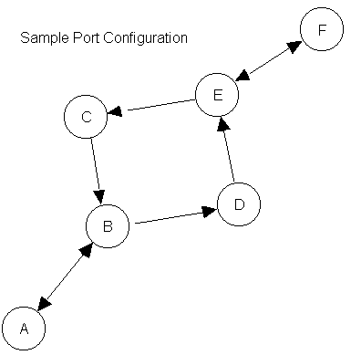

| VTAS - Vessel Traffic Advisory Service |
In order to promote safety and efficient use of port facilities, the Association of Coastal Merchants (ACM) has developed a concept for a Vessel Traffic Advisory Service (VTAS) that will provide traffic advisories for vessels transiting participating ports.
The concept is built on a computer program that maintains information about the traffic patterns and reported movements of vessels within the port over multiple days. For each port, the traffic lanes are defined between waypoints. The traffic lanes have been designated as directional to provide traffic separation and flow controls. Each port is represented by a square matrix containing the distances (in nautical miles) along each valid traffic lane. The distances are defined from each row waypoint to each column waypoint. A distance of 0 indicates that no valid traffic lane exists between the two waypoints.
Vessel traffic enters the port at a waypoint and transits the traffic lanes. A vessel may begin its transit at any of the waypoints and must follow a valid connected route via the valid traffic lanes. A vessel may end its transit at any valid waypoint.
The service provided by the VTAS to transiting vessels includes:
Reported times will be rounded to the nearest whole minute. Time is maintained based on a 24 hour clock (i.e. 9 am is 0900, 9 PM is 2100, midnight is 0000). Speed is measured in knots which is equal to 1 nautical mile per hour.
The input file for the computer program includes several datasets, each containing a Port Specification to provide the description of the traffic patterns within the port and a Traffic List which contains the sequence of vessels entering the port and their intended tracks. The end of each dataset is indicated by a Vessel Name beginning with an ``*".
Port Specification: Number of Waypoints in Port (an integer N)Waypoint ID List (N single-character designators)
Waypoint Connection Matrix (N rows of N real values specifying
the distances between waypoints in nautical miles)
Traffic List: Vessel Name (alphabetic characters)
Time at first waypoint (on 24-hour clock) & Planned Transit Speed (in knots)
Planned Route (ordered list of waypoints)
The output for each dataset shall provide for each vessel as it enters the port a listing indicating the arrival of the vessel and its planned speed followed by a table containing the waypoints in its route and projected arrival at each waypoint. Following this table will be appropriate messages indicating:
All times are to be printed as four-digit integers with leading zeros when necessary. Print a blank line after each dataset.
Assumptions & Limitations:
1. Vessel names are at most 20 characters long.
2. There are at most 20 waypoints in a port and at most 20 waypoints in any route.
3. There will be at most 20 vessels in port at any time.
4. A vessel will complete its transit in at most 12 hours.
5. No more than 24 hours will elapse between vessel entries.
6
ABCDEF
0 3 0 0 0 0
3 0 0 2 0 0
0 3 0 0 0 0
0 0 0 0 3 0
0 0 2 0 0 4
0 0 0 0 4 0
Tug
2330 12
ABDEF
WhiteSailboat
2345 6
ECBDE
TugWBarge
2355 5
DECBA
PowerCruiser
0 15
FECBA
LiberianFreighter
7 18
ABDXF
ChineseJunk
45 8
ACEF
*****

Tug entering system at 2330 with a planned speed of 12.0 knots
Waypoint: A B D E F
Arrival: 2330 2345 2355 0010 0030
WhiteSailboat entering system at 2345 with a planned speed of 6.0 knots
Waypoint: E C B D E
Arrival: 2345 0005 0035 0055 0125
TugWBarge entering system at 2355 with a planned speed of 5.0 knots
Waypoint: D E C B A
Arrival: 2355 0031 0055 0131 0207
Projected encounter with Tug on leg between Waypoints D & E
** Warning ** Close passing with Tug at Waypoint D
PowerCruiser entering system at 0000 with a planned speed of 15.0 knots
Waypoint: F E C B A
Arrival: 0000 0016 0024 0036 0048
Projected encounter with Tug on leg between Waypoints F & E
Projected encounter with WhiteSailboat on leg between Waypoints C & B
** Warning ** Close passing with WhiteSailboat at Waypoint B
LiberianFreighter entering system at 0007 with a planned speed of 18.0 knots
**> Invalid Route Plan for Vessel: LiberianFreighter
ChineseJunk entering system at 0045 with a planned speed of 8.0 knots
**> Invalid Route Plan for Vessel: ChineseJunk